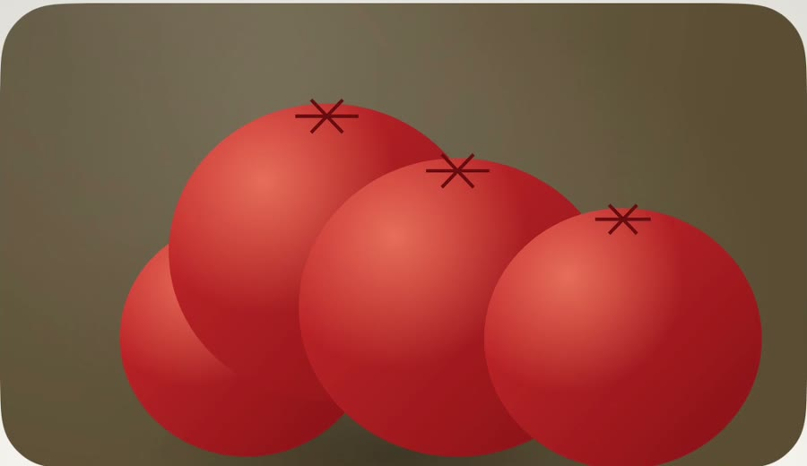
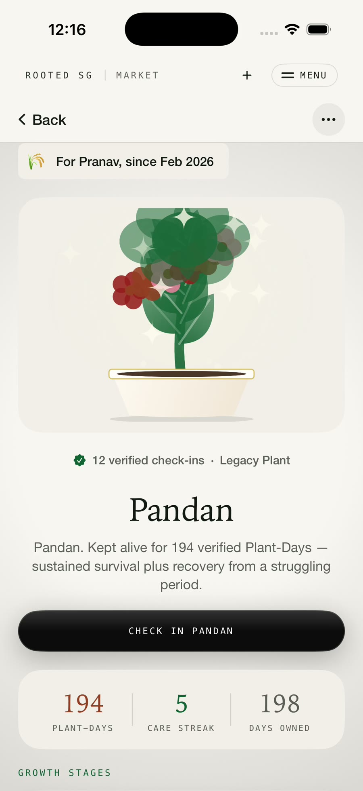
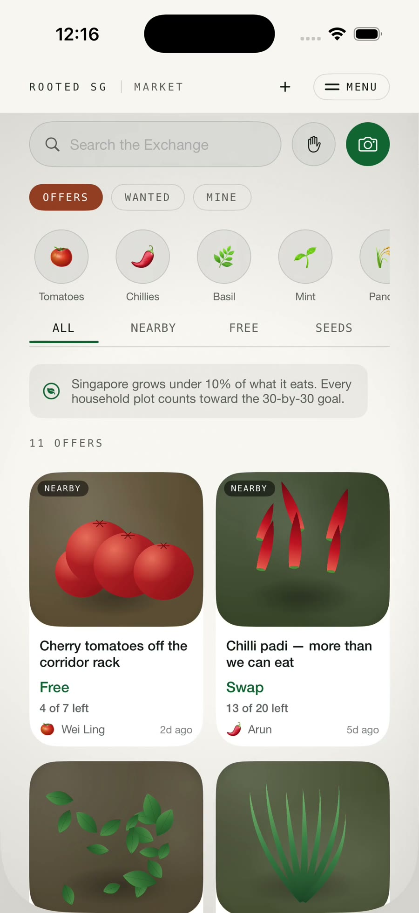
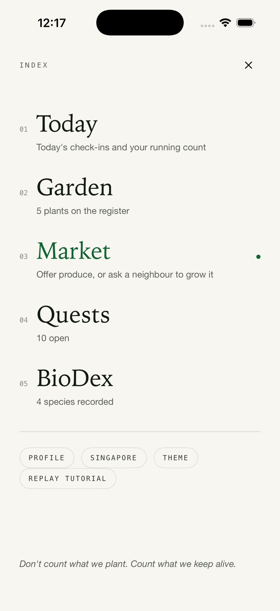
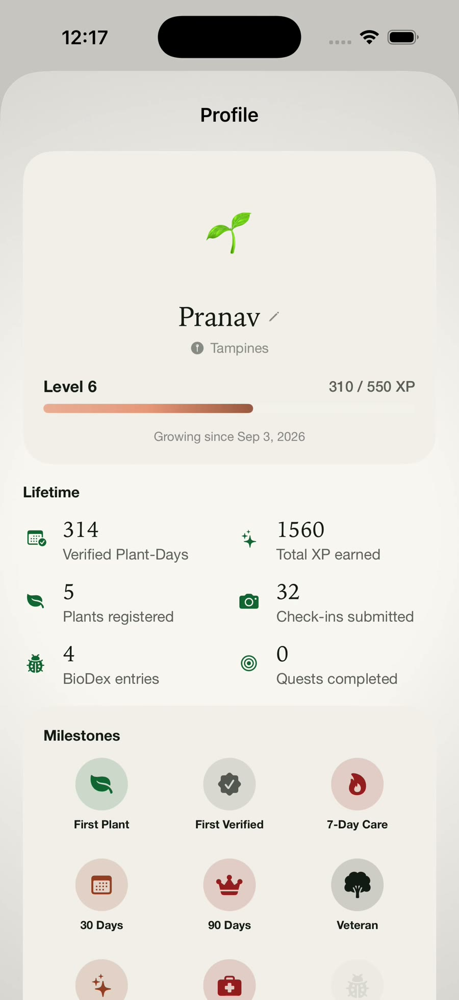
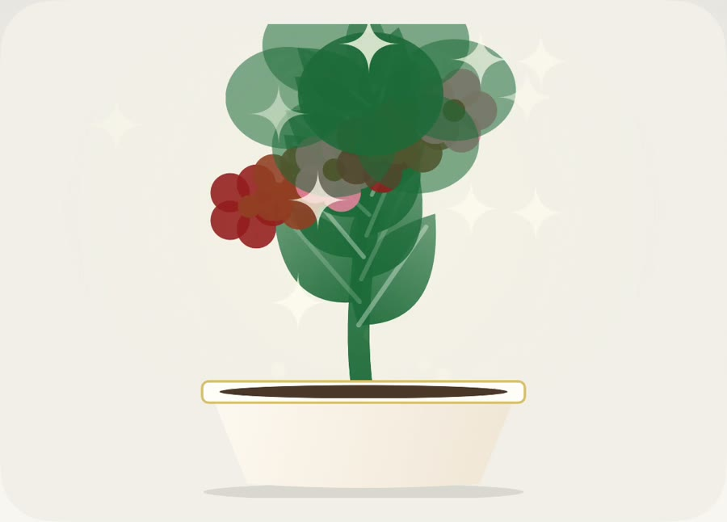
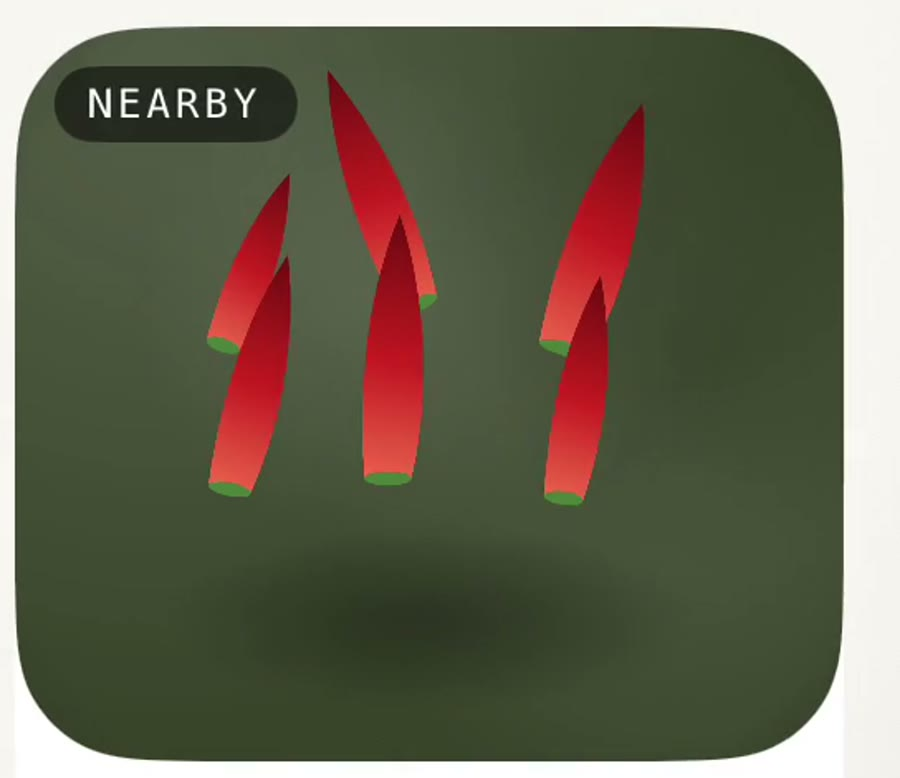
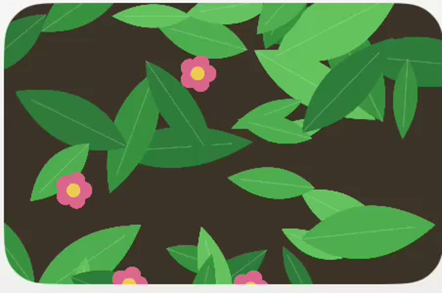

The corridor rack
Cherry tomatoes, free to a neighbour
"Pick-up from my block on weekend mornings. Bring your own bag." 4 of 7 left.
A growing app for Singapore homes, and a sensor stake that tells you whether your plant is still alive. Every number counts something that survived.
Real footage · Real CAD · Real survey


It carries every soil sensor, and, hidden down its back, the tube that waters the plant. Spade-shaped, so one hand can push it in.
Fourteen iterations to get the point right. The halves part to show the channels, with the leaf crown riding above.
A soil-line mark means a number today is comparable with a number last week.
Twin 5 V pumps merge at a Y-connector and run down the bore. It starts at the floor and stops at the target, so it can never chatter around one threshold.



Every pot, ordered so whatever needs you today is at the top.

"Pick-up from my block on weekend mornings. Bring your own bag." 4 of 7 left.

Sustained survival plus recovery from a struggling period, counted as verified days.

13 of 20 left, offered as a swap with a grower in the same neighbourhood.

Four of seventeen species recorded, each marked community-confirmed or AI-suggested.
Rooted counts verified plant-days: a day only counts when the plant was checked in and still alive. Survival, plus recovery from a struggling period, is what earns a Legacy Plant.
"70.9% of the 3,043 people we surveyed want to grow at home."
Rooted SG survey · n = 3,043A gable roof carries two 70 mm panels over an ESP32-S3. A jointed arm carries the stem clip. Designed in CAD, printed in PETG, joined without screws.
A sprung clip closes on the stem and drives two titanium needles through the outer tissue and into the conducting core. The jaws and gooseneck are printed.
A small alternating current is swept between the needles. At 1 kHz it can't cross a living membrane, so it threads the wet space between the cells.
At 100 kHz it passes straight through the membranes. The ratio between the two is the measurement. On the bench we report a trend and its timing, never a calibrated figure.
Every pot on one screen. Today's check-ins and your running count come first.
Offer produce, or ask a neighbour to grow it. Singapore grows under 10% of what it eats.
Levels, milestones from First Plant to Veteran, and the lifetime plant-day count.
This site has two of its own: use the half-moon at the top to switch.
Every metric is labelled with how real it is. We never show a prototype signal as a measurement.
On the stake you can print
Trend and timing only
Not measured yet, and labelled
Don't count what we plant. Count what we keep alive.